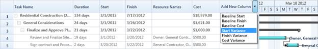

On-Demand Baseline Column inclusion will dynamically add the baseline columns namely Baseline Start, Baseline End, Baseline Cost, Start Variance, Finish Variance, Cost Variance to Gantt Grid on demand basis. These columns will be listed in a drop down cell. By picking a column from that cell, it will get added to the current table.
Initially, Gantt will get loaded with a default set of columns. Then, you can add the baseline columns on demand basis to Gantt Grid, by selecting the columns from the drop down cell.
Use Case Scenario
This helps the Project Lead to store the estimation and will help to schedule the project in an efficient way by comparing the progress on planning itself. Organizations can have the default set of columns on Gantt Grid on loading, and when they need to compare a field with the estimate data, they can pick that column from the drop down.

Figure 25
Properties
|
Property |
Description |
Type |
Data Type |
|
ShowAddNewColumn |
Gets/Sets the value that is used in displaying/hiding the add new column combo box in grid |
DependencyProperty |
bool |
Adding On-Demand Baseline Column Inclusion to an Application
To add the On-Demand Baseline Column Inclusion to an application you need to enable the AddNewColumn of Gantt Grid, which will have a drop down cell on its head, which intrun will have the baseline columns that can be added dynamically. To enable this feature:
1. To show the Add New Column of Gantt Grid, set the ShowAddNewColumn Property to true in Gantt.
2. To include the Baseline columns in the Add New Columns drop down cell, provide the corresponding mapping name in TaskAttributeMapping.
3. Mapped Baseline columns will be listed in the drop down cell.
4. By selecting a column name from the drop down cell, the corresponding column will be dynamically added to the Gantt Grid.
The following codes illustrate this:
|
[XAML]
<gantt:GanttControl Grid.Row="1" x:Name="Gantt" ItemsSource="{Binding GanttItemSource}" ToolTipTemplate="{StaticResource toolTipTemplate}" ShowAddNewColumn="True"> <gantt:GanttControl.TaskAttributeMapping> <gantt:TaskAttributeMapping TaskIdMapping="Id" TaskNameMapping="Name" DurationMapping="Duration" StartDateMapping="StDate" FinishDateMapping="EndDate" ChildMapping="ChildTask" ProgressMapping="Complete" PredecessorMapping="Predecessor" ResourceInfoMapping="Resource" CostMapping="Cost" BaselineCostMapping="BaselineCost" BaselineFinishMapping="BaselineEnd" BaselineStartMapping="BaselineStart" > </gantt:TaskAttributeMapping> </gantt:GanttControl.TaskAttributeMapping> </gantt:GanttControl>
|
|
[C#]
// Displaying the Add New column drop down this.Gantt.ShowAddNewColumn = true;
|
Samples Link
To view samples:
1. Select Start -> Programs -> Syncfusion -> Essential Studio x.x.xx -> Dashboard.
2. Click Run Samples for WPF under User Interface Edition panel.
3. Select Gantt.
4. Expand the Baseline Support item in the Sample Browser.
5. Choose the Baseline Table View sample to launch.